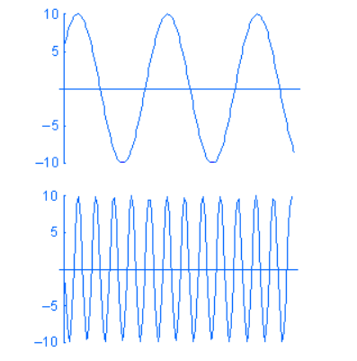
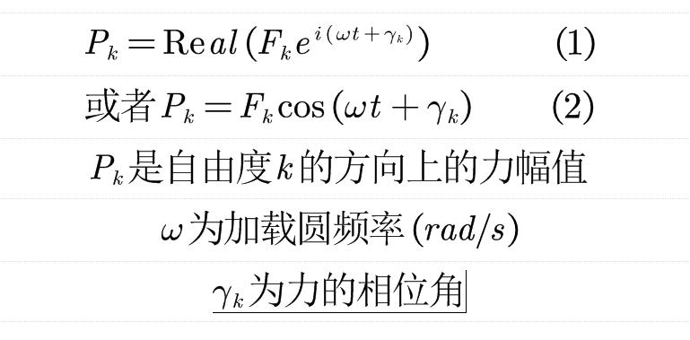
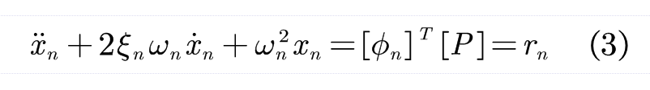
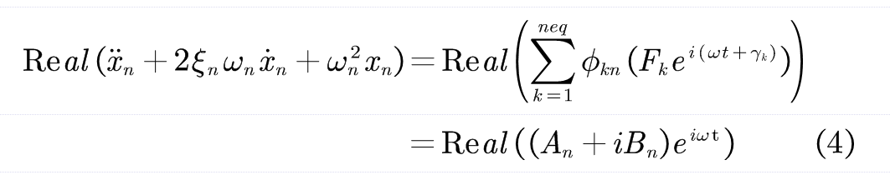
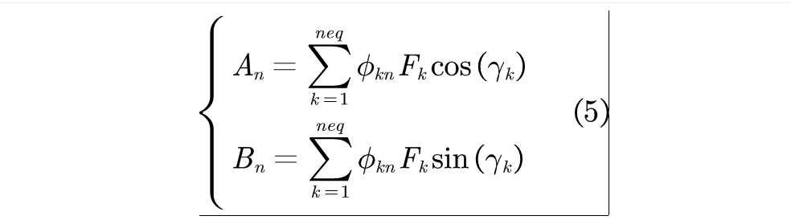
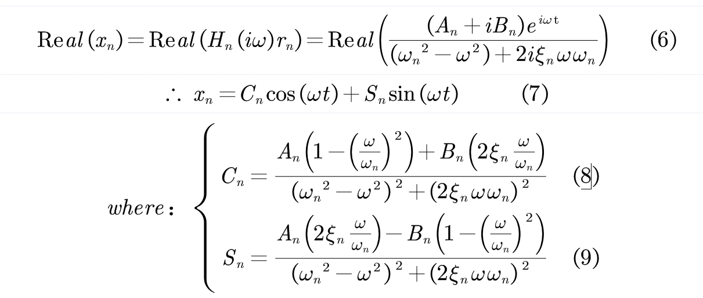
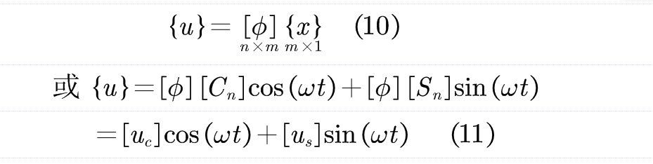
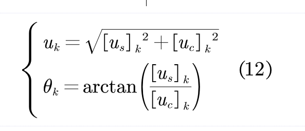
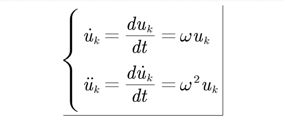

Solidworks仿真模块的结构谐响应分析方法
以下内容衍生自solidworks帮助文档
通过谐波分析，可以计算由于谐波载荷或基准激发而产生的稳态峰值响应。
谐波载荷 P 被表示为 P = A sin (ωt + φ)，其中：A 代表振幅，ω 代表频率，t 代表时间，φ 代表相位角度。下面是不同频率 w 随时间变化的谐波载荷范例：

谐波分析使用计算一定频率范围内的结构稳态峰值响应，相比历程分析，更加节省资源。
分析程序
在整个分析中，所有载荷和位移加载都具有相同的频率，加载的幅值可以由幅值-频率曲线定义。
假定谐波节点力向量 {P} 被定义为：

对于线性系统，系统的运动方程式分解为 n 个模态方程：

其中x_n为模态坐标。
将力向量 {P} 替换到（方程式 3）中会形成：

neq是结构自由度的数量，其中：

进一步，x_n的实部解为

结构位移向量 u 可以由以下公式指定：

由此，自由度k的位移量u_k和相位角theta_k为：

速度分量和加速度可以根据u_k获得：

相位角分别相对u_k异相90度、180度。